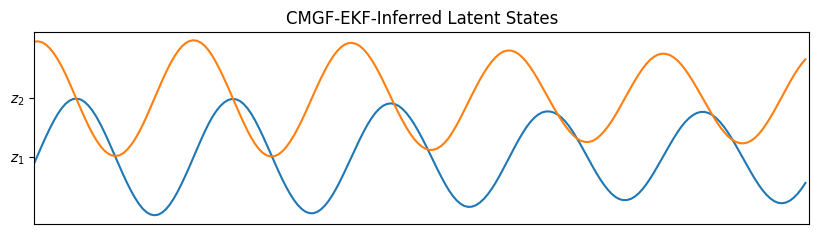
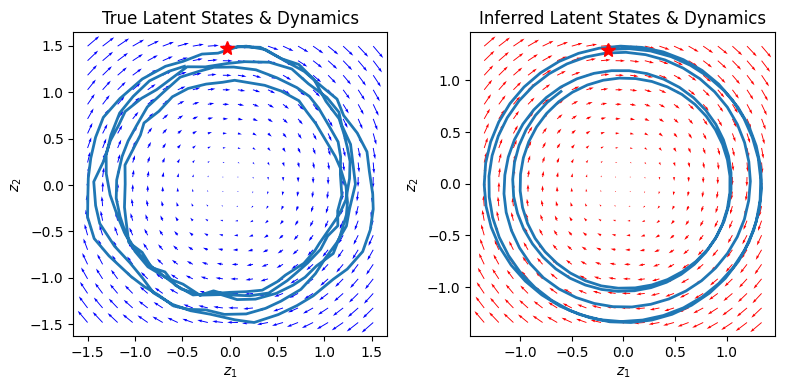
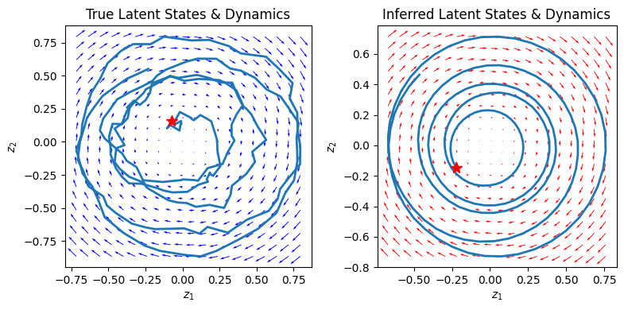
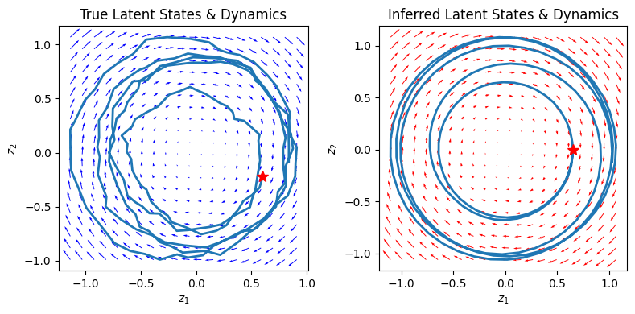
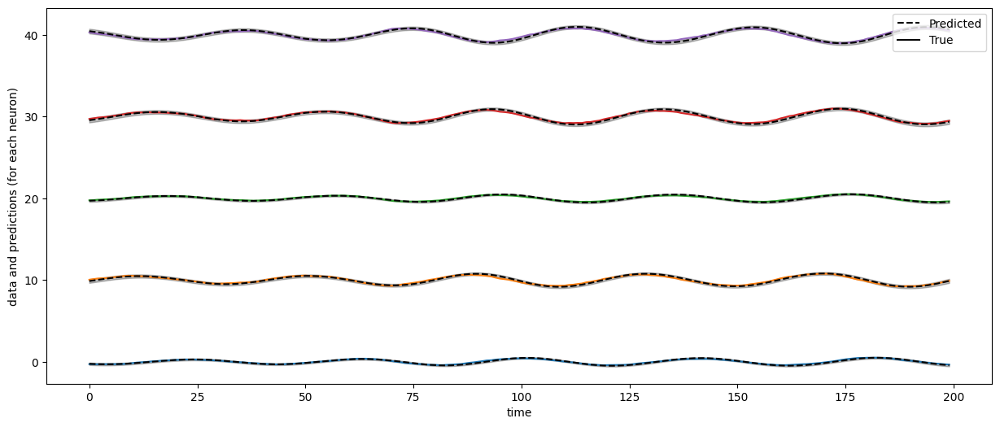

Fitting an LDS with Poisson Likelihood using conditional moments Gaussian filter#
Adapted fom lindermanlab/ssm-jax
Imports and Plotting Functions#
%%capture
try:
import dynamax
except ModuleNotFoundError:
print('installing dynamax')
%pip install -q dynamax[notebooks]
import dynamax
from dynamax.generalized_gaussian_ssm import ParamsGGSSM, GeneralizedGaussianSSM, EKFIntegrals
from dynamax.generalized_gaussian_ssm import conditional_moments_gaussian_smoother
No GPU/TPU found, falling back to CPU. (Set TF_CPP_MIN_LOG_LEVEL=0 and rerun for more info.)
import matplotlib.pyplot as plt
from matplotlib.gridspec import GridSpec
from tensorflow_probability.substrates.jax.distributions import Poisson as Pois
import jax.numpy as jnp
import jax.random as jr
from jax import vmap
Helper functions for plotting#
Show code cell content
def plot_dynamics_2d(dynamics_matrix,
bias_vector,
mins=(-40,-40),
maxs=(40,40),
npts=20,
axis=None,
**kwargs):
assert dynamics_matrix.shape == (2, 2), "Must pass a 2 x 2 dynamics matrix to visualize."
assert len(bias_vector) == 2, "Bias vector must have length 2."
x_grid, y_grid = jnp.meshgrid(jnp.linspace(mins[0], maxs[0], npts), jnp.linspace(mins[1], maxs[1], npts))
xy_grid = jnp.column_stack((x_grid.ravel(), y_grid.ravel(), jnp.zeros((npts**2,0))))
dx = xy_grid.dot(dynamics_matrix.T) + bias_vector - xy_grid
if axis is not None:
q = axis.quiver(x_grid, y_grid, dx[:, 0], dx[:, 1], **kwargs)
else:
q = plt.quiver(x_grid, y_grid, dx[:, 0], dx[:, 1], **kwargs)
plt.gca().set_aspect(1.0)
return q
def plot_states(states, num_steps, title, ax):
latent_dim = states.shape[-1]
lim = abs(states).max()
for d in range(latent_dim):
ax.plot(states[:, d] + lim * d, "-")
ax.set_yticks(jnp.arange(latent_dim) * lim)
ax.set_yticklabels(["$z_{}$".format(d + 1) for d in range(latent_dim)])
ax.set_xticks([])
ax.set_xlim(0, num_steps)
ax.set_title(title)
return ax
def plot_emissions_poisson(states, data):
latent_dim = states.shape[-1]
emissions_dim = data.shape[-1]
num_steps = data.shape[0]
plt.figure(figsize=(8, 6))
gs = GridSpec(2, 1, height_ratios=(1, emissions_dim / latent_dim))
# Plot the continuous latent states
lim = abs(states).max()
plt.subplot(gs[0])
for d in range(latent_dim):
plt.plot(states[:, d] + lim * d, "-")
plt.yticks(jnp.arange(latent_dim) * lim, ["$z_{}$".format(d + 1) for d in range(latent_dim)])
plt.xticks([])
plt.xlim(0, num_steps)
plt.title("Sampled Latent States")
lim = abs(data).max()
plt.subplot(gs[1])
plt.imshow(data.T, aspect="auto", interpolation="none")
plt.xlabel("time")
plt.xlim(0, num_steps)
plt.yticks(ticks=jnp.arange(emissions_dim))
plt.ylabel("Emission dimension")
plt.title("Sampled Emissions (Counts / Time Bin)")
plt.tight_layout()
plt.colorbar()
def compare_dynamics(Ex, states, data, dynamics_weights, dynamics_bias):
# Plot
fig, axs = plt.subplots(1, 2, figsize=(8, 4))
q = plot_dynamics_2d(
dynamics_weights,
dynamics_bias,
mins=states.min(axis=0),
maxs=states.max(axis=0),
color="blue",
axis=axs[0],
)
axs[0].plot(states[:, 0], states[:, 1], lw=2)
axs[0].plot(states[0, 0], states[0, 1], "*r", markersize=10, label="$z_{init}$")
axs[0].set_xlabel("$z_1$")
axs[0].set_ylabel("$z_2$")
axs[0].set_title("True Latent States & Dynamics")
q = plot_dynamics_2d(
dynamics_weights,
dynamics_bias,
mins=Ex.min(axis=0),
maxs=Ex.max(axis=0),
color="red",
axis=axs[1],
)
axs[1].plot(Ex[:, 0], Ex[:, 1], lw=2)
axs[1].plot(Ex[0, 0], Ex[0, 1], "*r", markersize=10, label="$z_{init}$")
axs[1].set_xlabel("$z_1$")
axs[1].set_ylabel("$z_2$")
axs[1].set_title("Inferred Latent States & Dynamics")
plt.tight_layout()
# plt.show()
def compare_smoothened_predictions(Ey, Ey_true, Covy, data):
data_dim = data.shape[-1]
plt.figure(figsize=(15, 6))
plt.plot(Ey_true + 10 * jnp.arange(data_dim))
plt.plot(Ey + 10 * jnp.arange(data_dim), "--k")
for i in range(data_dim):
plt.fill_between(
jnp.arange(len(data)),
10 * i + Ey[:, i] - 2 * jnp.sqrt(Covy[:, i, i]),
10 * i + Ey[:, i] + 2 * jnp.sqrt(Covy[:, i, i]),
color="k",
alpha=0.25,
)
plt.xlabel("time")
plt.ylabel("data and predictions (for each neuron)")
plt.plot([0], "--k", label="Predicted") # dummy trace for legend
plt.plot([0], "-k", label="True")
plt.legend(loc="upper right")
# plt.show()
Make data#
First, we define a helper random rotation functionto use as our dynamics function.
# Helper function to create a rotating linear system
def random_rotation(dim, key=0, theta=None):
if isinstance(key, int):
key = jr.PRNGKey(key)
key1, key2 = jr.split(key)
if theta is None:
# Sample a random, slow rotation
theta = 0.5 * jnp.pi * jr.uniform(key1)
if dim == 1:
return jr.uniform(key1) * jnp.eye(1)
rot = jnp.array([[jnp.cos(theta), -jnp.sin(theta)], [jnp.sin(theta), jnp.cos(theta)]])
out = jnp.eye(dim)
out = out.at[:2, :2].set(rot)
q = jnp.linalg.qr(jr.uniform(key2, shape=(dim, dim)))[0]
return q.dot(out).dot(q.T)
Next, we generate a random weight that we will use for our Poisson distribution
# Parameters for our Poisson demo
state_dim, emission_dim = 2, 5
poisson_weights = jr.normal(jr.PRNGKey(0), shape=(emission_dim, state_dim))
Then, we define a function to sample rotating latent states and the corresponding Poisson emissions.
# Sample from Poisson
def sample_poisson(model, params, num_steps, num_trials, key=0):
if isinstance(key, int):
key = jr.PRNGKey(key)
def _sample(key):
states, emissions = model.sample(params, num_timesteps=num_steps, key=key)
return states, emissions
if num_trials > 1:
batch_keys = jr.split(key, num_trials)
states, emissions = vmap(_sample)(batch_keys)
else:
states, emissions = _sample(key)
return states, emissions
Model#
Finally, we construct our CMGF parameters object and sample our (states, emissions) dataset.
params = ParamsGGSSM(
initial_mean = jnp.zeros(state_dim),
initial_covariance = jnp.eye(state_dim),
dynamics_function = lambda z: random_rotation(state_dim, theta=jnp.pi/20) @ z,
dynamics_covariance = 0.001 * jnp.eye(state_dim),
emission_mean_function = lambda z: jnp.exp(poisson_weights @ z),
emission_cov_function = lambda z: jnp.diag(jnp.exp(poisson_weights @ z)),
emission_dist = lambda mu, Sigma: Pois(log_rate = jnp.log(mu))
)
model = GeneralizedGaussianSSM(state_dim, emission_dim)
num_steps, num_trials = 200, 3
# Sample from random-rotation state dynamics and Poisson emissions
all_states, all_emissions = sample_poisson(model, params, num_steps, num_trials)
Let’s visualize the first of the batches of samples generated:
plot_emissions_poisson(all_states[0], all_emissions[0])

CMGF-EKF Inference#
Let us infer the hidden states from the Poisson emissions using CMGF-EKF.
posts = vmap(conditional_moments_gaussian_smoother, (None, None, 0))(params, EKFIntegrals(), all_emissions)
fig, ax = plt.subplots(figsize=(10, 2.5))
plot_states(posts.smoothed_means[0], num_steps, "CMGF-EKF-Inferred Latent States", ax);

for i in range(num_trials):
compare_dynamics(posts.smoothed_means[i], all_states[i], all_emissions[i],
random_rotation(state_dim, theta=jnp.pi/20), jnp.zeros(state_dim))
compare_smoothened_predictions(
posts.smoothed_means[i] @ poisson_weights.T,
all_states[i] @ poisson_weights.T,
poisson_weights @ posts.smoothed_covariances[i] @ poisson_weights.T,
all_emissions[i],
)



